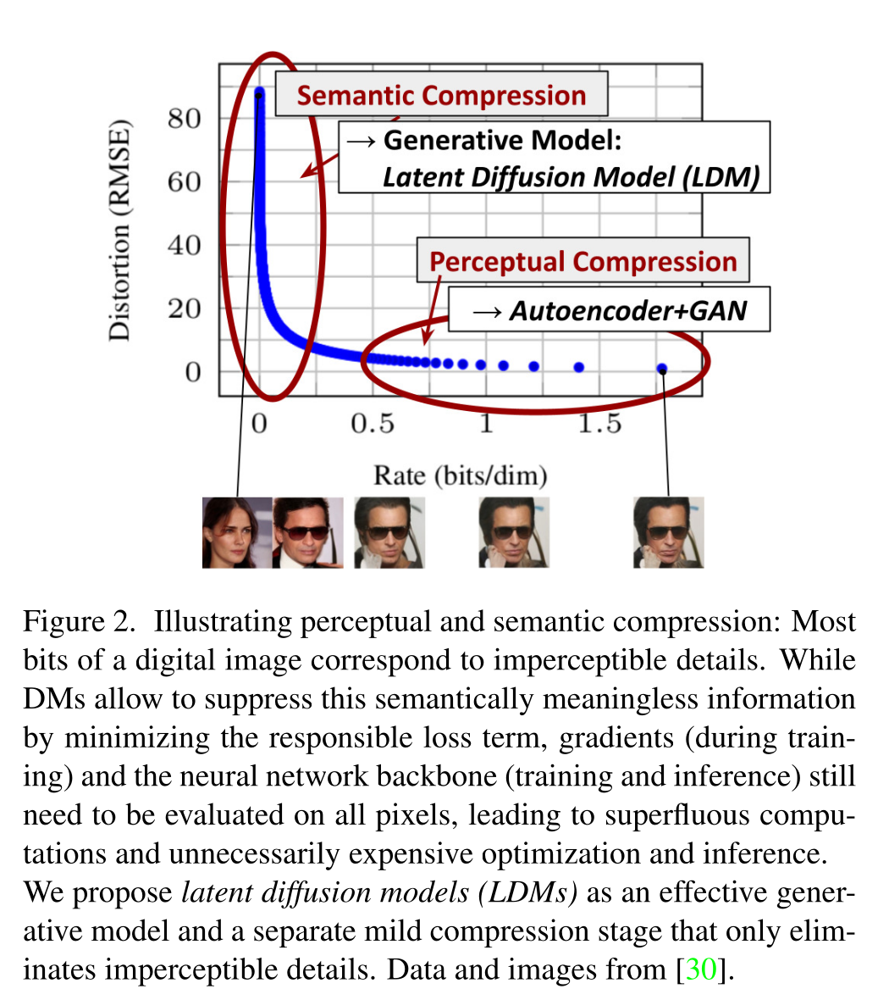
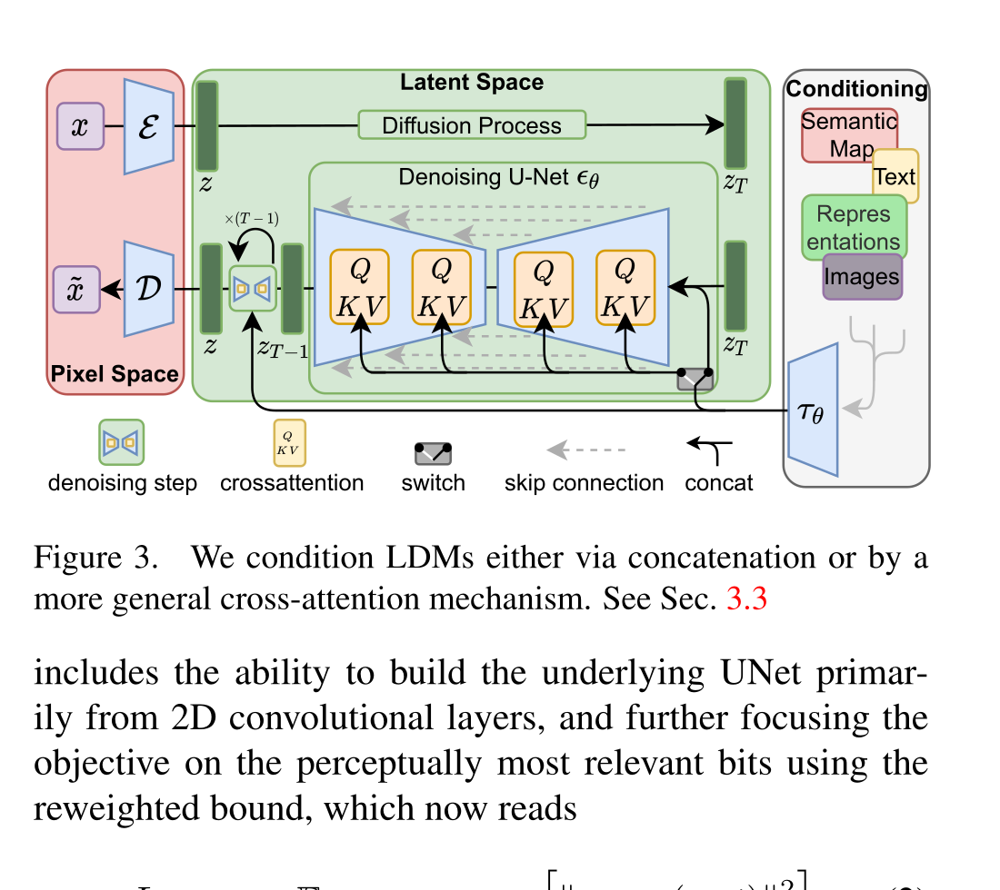

High-Resolution Image Synthesis with Latent Diffusion Models
Robin Rombach 等 · CVPR 2022 · arXiv:2112.10752 · Zotero V9VTDBYM
LDM 不是一种新的前向加噪公式。它保留扩散模型的训练范式，却把工作空间从像素 $x$ 换成预训练自编码器的 latent $z=\mathcal E(x)$；再用 cross-attention 把文本、语义图、布局等条件注入 U-Net。这三件事共同奠定了 Stable Diffusion 与大量视频/WAM 系统的结构基础。
§1 核心转移：别在每个像素上反复去噪
像素空间同时包含语义结构与大量人眼难以察觉的高频细节。先用自编码器移除感知冗余，再让扩散模型专注于语义/概念组合，可以显著降低训练与采样成本，同时保留高分辨率生成能力。
§2 两级压缩：感知信息与语义信息分工

- $f$
- 空间下采样因子；论文系统比较 $f=2^m$。
- 二维 latent
- 仍保留图像网格结构，因此 U-Net 的卷积归纳偏置可以继续使用。
- KL-reg / VQ-reg
- 论文分别用轻量 KL 正则或向量量化约束 latent，避免尺度失控。
压缩率不是越大越好。论文分析显示 $f\in\{4,8\}$ 常位于质量与效率的较好折中；过强压缩（如 $f=32$）把生成模型需要恢复的语义信息也丢掉。
§3 架构：Pixel Space 只在入口和出口出现

1. 先训练感知压缩器
用重建、感知与对抗目标得到 $\mathcal E,\mathcal D$；它决定后续扩散能看到哪些信息。
2. 固定编码空间并添加噪声
把图像编码成 $z$，随机取 $t$ 构造 $z_t$，训练过程与 DDPM 同构。
3. 条件变成 token
$\tau_\theta(y)$ 将文本或其他模态投影为序列，供每层 cross-attention 读取。
4. 去噪 latent，再一次解码
采样从 $z_T$ 走到 $z_0$；最终只运行一次 $\mathcal D(z_0)$ 得到像素图像。
§4 训练目标：DDPM 换了变量，没有换基本语法
- $x\rightarrow z$
- 训练目标的干净样本由像素换成编码 latent。
- $z_t$
- 按相同高斯前向过程污染的 latent。
- $\epsilon_\theta$
- 时间条件 U-Net 预测噪声；优势来自每次网络计算处理的空间更小。
§5 Cross-Attention：让一种 U-Net 接多种控制信号
- $Q=W_Q\varphi_i(z_t)$
- 查询来自 U-Net 当前空间特征。
- $K,V=W_{K,V}\tau_\theta(y)$
- 键和值来自文本、语义图或其他条件编码。
- 意义
- 条件无需和图像同尺寸；同一生成骨架可支持 text-to-image、layout-to-image 等任务。
§6 论文证据：省算力不是免费午餐
§7 为什么它直接通向 Video DiT 与 WAM
视频生成把 $z$ 扩成 $T\times H'\times W'\times C$，用 3D/时空 VAE 压缩视频，再让 Video U-Net 或 DiT 处理时空 patch。生成式 WAM 进一步把历史观测、语言、机器人状态和动作作为条件，或把未来 latent 与动作共同生成。
| LDM | $p(z_0\mid y)$：条件图像 latent |
| Video LDM / Video DiT | $p(z_{1:T}\mid y)$：条件视频 latent |
| 生成式 WAM | $p(z_{future},a\mid z_{history},l,s)$：未来与动作受历史/任务约束 |
| 新增难题 | 时间一致性、动作—后果因果一致、闭环延迟与接触细节 |
图像“感知等价”的 latent 不一定对机器人“控制等价”。微小接触状态、物体深度和夹爪相对位姿，可能在人眼看来不重要，却决定动作成败；WAM 的 video tokenizer 必须为动力学与控制重新评估。